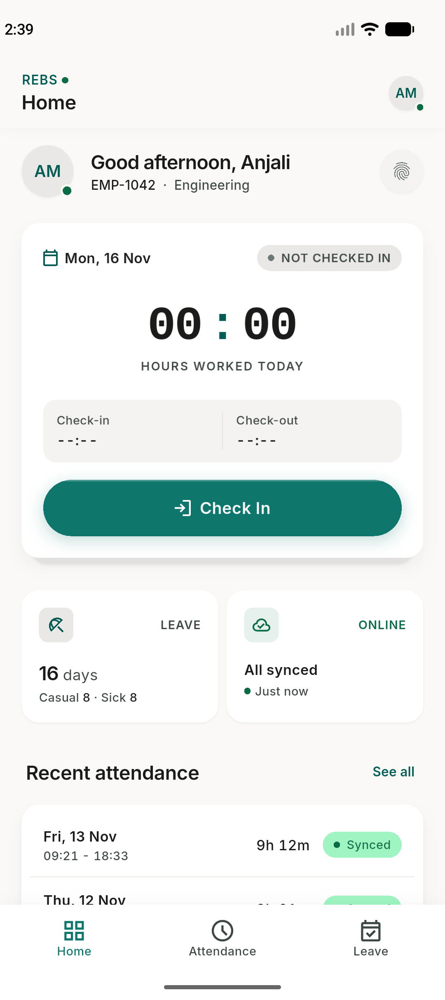
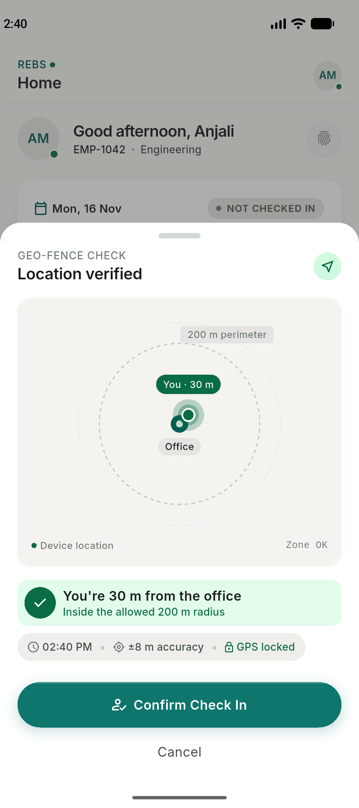
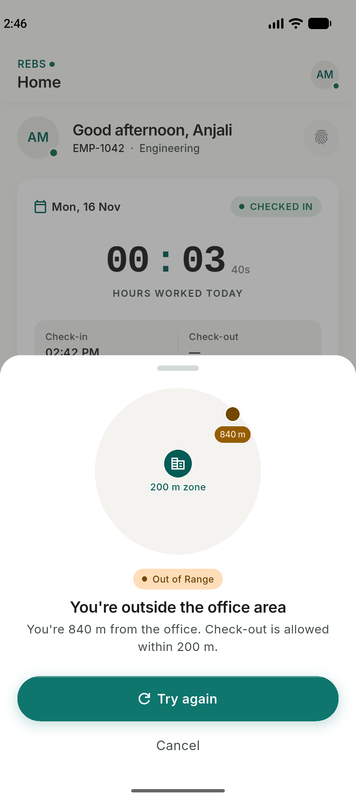
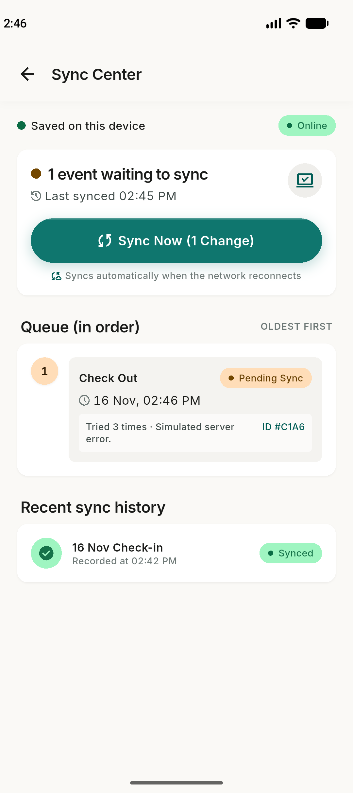
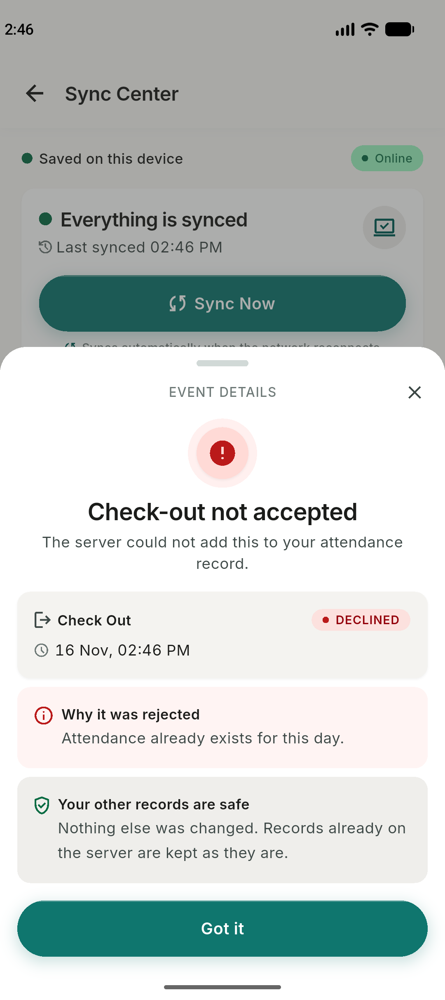
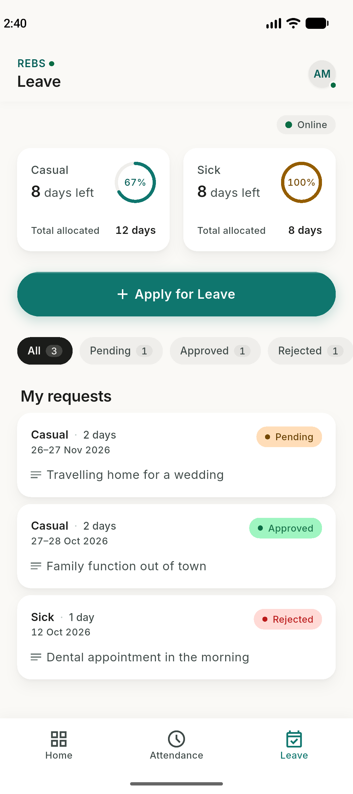
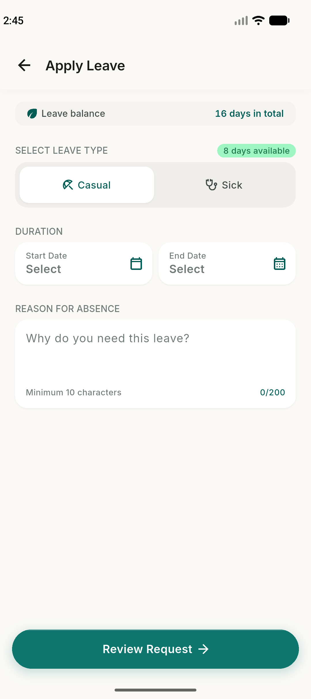
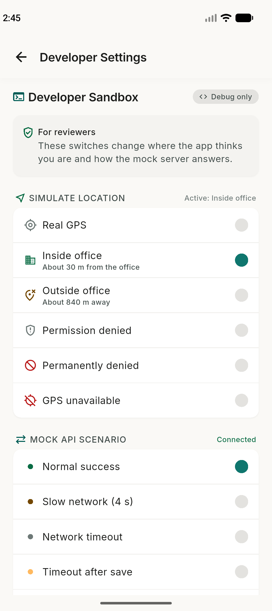

An offline-capable mobile app for one employee. It shows today's attendance, lets the employee check in and out at the office, and apply for leave. Attendance still works without internet and is sent to the server when the connection returns.
| Platforms | Android (built and tested). The iOS project is included but has not been built. |
| Data | Local mock HTTP server, with a copy saved on the device for offline use |
| Screens | 12 |
| Main challenge | Offline storage and synchronization: all 7 cases implemented |
| In this document | 1. What the app does 2. Every screen explained 3. Offline and sync 4. Technology used |
The app has three features for the employee, with one sync system working behind them:
| Feature | Question it answers | What it does |
|---|---|---|
| Home | What is my status today? | Shows the employee, today's attendance status, check-in and check-out times, hours worked, leave balance and the latest five attendance days. |
| Attendance | Can I check in or out now? | Records a check-in or check-out with the time and GPS position. It is allowed only within 200 m of the office. |
| Leave | Can I take days off? | A form for Casual or Sick leave, checked against dates, balance and existing requests, plus a list of all requests with their status. |
| Sync | Has my attendance reached the server? | Every attendance action is saved on the phone first and then sent to the server. Each one is marked Pending Sync, Synced or Rejected. |
Attendance rules. One check-in per working day. Check-out only after check-in. Tapping the button repeatedly creates only one event. The working day follows the company timezone (Asia/Kolkata), not the phone's.
Offline. The dashboard, attendance history and leave requests are saved in a database on the phone, so they can be viewed without internet. Check-in and check-out also work offline. Applying for leave needs a connection.
Server. There is no real REBS backend. The project includes a small mock server that runs on the developer's computer. It repeats every check the app makes and can be switched to behave slowly, fail, or reject requests.
Employee. One preconfigured employee is used. There is no login.
A short branded launch screen with an "Offline ready" badge. It opens the app after a brief animation. No data is loaded here; each tab loads its own.

The whole working day at a glance.

A sheet that verifies the employee is at the office before anything is recorded.

The same sheet explains each problem and offers the matching fix.
Confirms that the check-in or check-out was recorded.
A month of attendance history.

Shows exactly what is waiting to reach the server.

Explains why the server did not accept an event.

Leave balances and every request the employee has made.

The leave form: type (Casual or Sick), start date, end date and reason.
A summary to check before sending: leave type, dates, number of days, balance after the request, and the reason.

Tools for reviewers. Open it with the round button at the top right of Home, or by long-pressing the title in the header.
This is the main engineering challenge of the assignment. For each case, this section says what the app does and how to check it. The scenarios are switched in Developer Settings (screen 12).
What the app does: a check-in or check-out made without internet is saved on the phone and shown as "Pending Sync". Online and offline use the same path: the event is always saved locally first and sent afterwards.
How to check: turn on airplane mode, check in, and open the Sync Center. The event is in the queue.
What the app does: if the server cannot be reached and nothing has been saved yet, Home still opens in offline mode instead of showing an error screen. The employee's profile is filled in later, but today's card and Check In work straight away. When the connection returns, the screen refreshes by itself.
How to check: clear the app's data, stop the mock server (or turn on airplane mode) and open the app. Home shows the offline banner and "Profile will load when you are online". Start the server again and the profile appears.
What the app does: waiting events are stored in a SQLite database, so they are still there after the app is closed and reopened. They are sent when the app next starts with a connection.
How to check: with an event pending, close the app fully and open it again. The event is still in the Sync Center queue.
What the app does: events are sent one at a time, oldest first. If one cannot be sent, everything behind it waits, so a check-out never reaches the server before its check-in. Sync runs on app start, when the connection returns, when "Sync Now" is tapped, and on a retry timer that waits longer after each failure (2 s up to 60 s).
How to check: check in and check out offline, turn airplane mode off, and watch both events become Synced in order. Or tap "Sync Now".
What the app does: the event is marked Rejected and keeps the server's reason. It is not retried. If a check-in is rejected, its waiting check-out for the same day is rejected too, because it could never succeed.
How to check: select the duplicate-attendance scenario, check in, then tap the Rejected chip to read the reason.
What the app does: the app cannot know whether the server saved the event, so it keeps it Pending and sends it again with the same ID. The server recognises the ID and answers with the original record instead of creating a second one.
How to check: select "Timeout after save" and check in. The event stays Pending. Switch back to "Normal success" and tap "Sync Now". The event becomes Synced and the server holds exactly one record.
What the app does: each event gets a unique ID (UUID) when it is created. The ID never changes across retries and is sent as the Idempotency-Key. Duplicates are also blocked at three levels in the app: the button locks while saving, the attendance rules count events that are still pending, and the database allows only one check-in and one check-out per day.
How to check: tap "Confirm Check In" several times quickly. Only one event appears in the Sync Center.
| Area | What is used |
|---|---|
| Framework | Flutter and Dart (null safety) |
| State management | GetX (reactive state, dependency injection and routing) |
| Architecture | Feature-based Clean Architecture: each feature has data, domain and presentation layers. Business rules are plain Dart classes, not in widgets. |
| HTTP client | Dio, with request and response logging in debug builds |
| Local database | sqflite (SQLite): saved copies of server data and the queue of waiting events |
| Location | geolocator |
| Icons | flutter_svg |
| Connectivity | connectivity_plus |
| Event identity | uuid (UUID v4, used as the idempotency key) |
| Dates and timezone | intl, timezone (company timezone Asia/Kolkata) |
| Mock server | A separate Dart project using shelf and shelf_router, with 7 switchable scenarios |
| Automated tests | 160 app tests (unit and widget) and 33 mock-server tests, all passing |